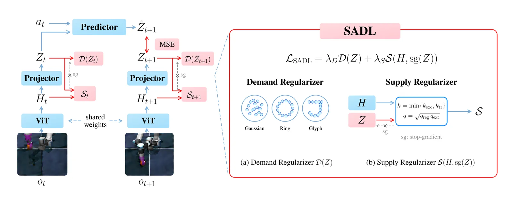
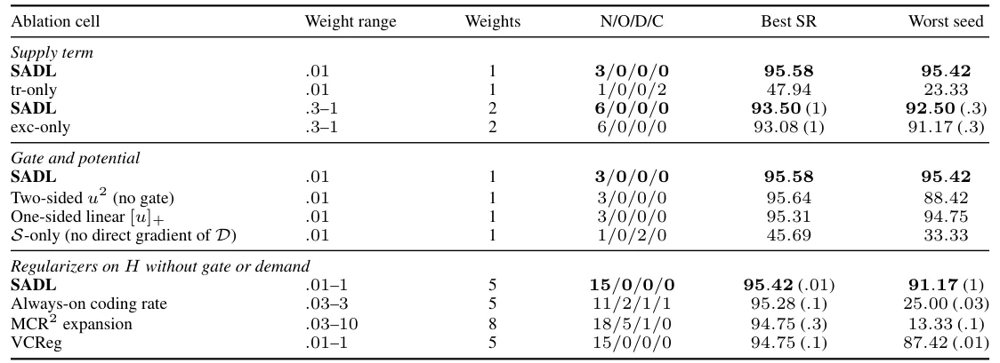
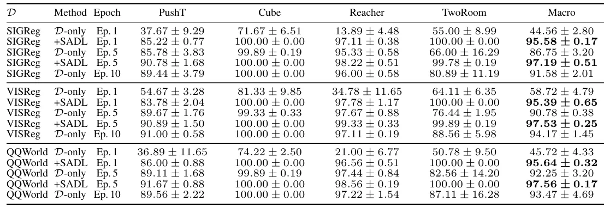

O Problema Silencioso do Colapso em JEPAs
As Joint-Embedding Predictive Architectures (JEPAs), como LeWorldModel (LeWM) e INTACT, representam uma mudança de paradigma em relação à reconstrução de pixels. Em vez de prever cada pixel de uma imagem futura, esses modelos aprendem representações latentes que capturam a dinâmica do mundo. Um encoder Eθ mapeia entradas para uma representação H, que é projetada por um projetor Pϕ em um ponto final Z. Regularizadores de demanda são aplicados em Z para garantir que a geometria das representações seja útil para tarefas de controle ou classificação.
No entanto, os autores identificam uma falha fundamental: um projetor bem regularizado não garante que o encoder H tenha preservado a variação entre amostras. O problema começa na inicialização. Em modelos LeWM e INTACT, a representação H é dominada por um componente compartilhado por todas as entradas, carregando apenas 0,01% de sua energia em variação amostral. Após uma epoch de treinamento com um regularizador de demanda, esse número sobe apenas para 3-5%. O resto da informação útil é perdido.
Por que isso acontece? A previsibilidade não é sinônimo de utilidade. Suprimir distinções entre amostras torna o alvo mais fácil de prever, mas transforma estados diferentes em entradas de controle indistinguíveis. Os autores descobrem que dois mecanismos mantêm esse colapso. Primeiro, a normalização por lote (Batch Normalization - BN) no projetor subtrai a média do batch. Isso coloca o componente compartilhado no espaço nulo do Jacobiano do projetor. Segundo, a variação restante cresce principalmente através do gradiente da tarefa e se concentra em poucas direções, resultando em um 'effective rank' baixo.

A Mecânica do Colapso: Espaço Nulo e Gradientes Vanishing
Para entender a profundidade do problema, precisamos olhar para a propagação de gradiente. A correção fornecida por um regularizador de demanda D(Z) sobre a representação H é dada pelo produto do Jacobiano do projetor JP(H) e o gradiente em Z. Se uma perturbação ΔH está no espaço nulo de JP, o gradiente em H se torna zero. No caso de projetores com Batch Normalization, adicionar um vetor constante c a todas as linhas de H não altera Z. Portanto, a direção compartilhada (o 'mean') tem gradiente zero tanto para o regularizador de demanda quanto para a perda da tarefa.
Isso significa que nenhum sinal de correção atinge o componente compartilhado de H. Enquanto isso, a variação amostral restante é concentrada em poucas direções, com um effective rank de cerca de 15. O gradiente do endpoint atinge essas direções, mas não consegue expandi-las significativamente. O projetor pode remixar e amplificar a variação existente para satisfazer a demanda, mas não pode recuperar o que H perdeu. Consequentemente, Z herda uma versão atenuada da degradação de H.
Os autores demonstram que o problema não reside em qual regularizador de demanda é universalmente melhor, mas sim na falta de correspondência entre a capacidade de demanda do endpoint e a capacidade de oferta do encoder. A oferta tem duas limitações distintas: o encoder pode falhar em excitar direções dependentes da amostra, ou o projetor pode falhar em transmiti-las. Ignorar essa dinâmica leva a colapsos frequentes, observados em 50% das sementes aleatórias em baselines sem correção.
SADL: A Solução de Oferta e Demanda
O SADL (Supply And Demand Loss) é proposto para corrigir essa assimetria. A ideia central é adicionar um regulador de oferta (Supply Regularizer) diretamente em H, coordenado com o regulador de demanda em Z. O SADL não altera a arquitetura nem adiciona parâmetros treináveis. Ele funciona lendo a capacidade de demanda q do regularizador existente e medindo a capacidade de oferta k de H. Se a oferta for insuficiente para atender à demanda (k < q), o SADL aplica uma correção.
A capacidade de demanda q é determinada pela satisfação do regularizador de demanda (qreg) e pela excitação do endpoint (qexc). Já a capacidade de oferta k é definida pelo menor valor entre a excitação (kexc) e a transmissão (ktr) em H. A excitação mede a variação dependente da amostra, enquanto a transmissão mede a associação linear entre H e Z. O regulador de oferta S é unidirecional: ele só atua quando k < q, evitando interferência desnecessária quando a representação já está saudável.
Matematicamente, o SADL utiliza funções de medição baseadas em estatísticas de batch. A excitação Fexc(U) usa o logaritmo do determinante da matriz de covariância centrada, normalizado pela energia não centrada. Isso torna a métrica sensível à presença de um componente compartilhado dominante. A transmissão Ftr mede a associação linear entre H e Z. Ao combinar essas métricas, o SADL cria um sinal de gradiente que corrige H nas direções onde ele falha, seja na excitação inicial ou na transmissão para Z.
Resultados: Estabilidade e Performance
Os experimentos foram conduzidos no LeWorldModel (LeWM) e INTACT, avaliando tarefas de controle como PushT, Cube, Reacher e TwoRoom. Os autores testaram o SADL com três regularizadores de demanda diferentes: VISReg, SIGReg e QQWorld. Em configurações de treinamento conjunto de quatro tarefas, o SADL reduziu a taxa de colapso de 50% para 0% em dez sementes aleatórias. Isso representa uma melhoria significativa na estabilidade do treinamento.
A qualidade das representações também melhorou drasticamente. Após uma epoch de treinamento, o effective rank do encoder com SADL é de 3,4 a 6,4 vezes maior do que a baseline sem SADL. O erro de previsão latente caiu para 1/20 a 1/303 do valor original. Em termos de performance de controle, o INTACT com SADL superou 95% de sucesso médio em controle sem busca, superando a baseline que ficava em torno de 44%. O SADL também mostrou robustez, mantendo a performance mesmo quando o peso da perda variava por ordens de magnitude.
Além do controle, o SADL foi testado em quatro conjuntos de dados de imagem, melhorando consistentemente a precisão e a estabilidade em diferentes sementes. Os autores notam que parte da correção ocorre através do viés β da LayerNorm final do encoder, que cresce para cancelar a média compartilhada, reduzindo a norma da média do batch de H de 13-14,7 para cerca de 1,4. Isso demonstra que o SADL consegue reparar até checkpoints quase colapsados.

Limitações e Trabalhos Futuros
Apesar dos resultados promissores, os autores destacam limitações importantes. O argumento do espaço nulo apresentado na seção 3.1 é específico para projetores com Batch Normalization. Projetores com outras normalizações têm invariâncias diferentes, que não foram analisadas neste trabalho. Além disso, a métrica de transmissão ktr mede apenas associação de segunda ordem, o que pode não capturar relações não-lineares complexas.
Os modelos avaliados são ViT-Tiny e ViT-Small. Em conjuntos de dados menores onde a baseline já é saudável, como CIFAR-10, o ganho do SADL está dentro do ruído das sementes. Isso sugere que o método é mais crítico em cenários de maior complexidade ou onde o colapso é uma ameaça iminente. O paper não aborda a generalização para operadores de transmissão não-lineares, multimodais ou temporalmente estruturados, que são áreas naturais para expansão futura.
Outra limitação é a dependência da leitura da demanda. O SADL mede a demanda baseada na estrutura já atingida em Z. Se o regularizador de demanda for mal configurado ou se a representação em Z estiver muito degradada antes da correção, o SADL pode ter dificuldade em recuperar a informação. No entanto, os experimentos mostram que o método é eficaz em reparar checkpoints próximos do colapso, indicando uma certa tolerância a esses cenários.
Conclusão
O SADL introduz um princípio de baixo custo e alto impacto para o aprendizado de representações estáveis. Ao corresponder a capacidade de demanda do endpoint com a capacidade de oferta do encoder, o método previne o colapso e acelera a convergência. A abordagem é agnóstica ao regularizador de demanda específico e não requer ajustes finos adicionais, tornando-a uma ferramenta valiosa para o desenvolvimento de modelos mundiais mais robustos.
Para desenvolvedores e cientistas de dados que trabalham com JEPAs, a lição principal é clara: a regularização apenas no espaço projetado é insuficiente. A geometria do encoder deve ser monitorada e corrigida ativamente. O SADL oferece um mecanismo elegante para fazer isso, sem a complexidade adicional de redes auxiliares ou parâmetros extras. À medida que os modelos mundiais se tornam mais complexos, técnicas como o SADL serão essenciais para garantir que as representações latentes capturem a riqueza do mundo real, e não apenas sua média.

O que fica
- O colapso em JEPAs ocorre porque o componente compartilhado fica no espaço nulo do projetor, ignorado pelos gradientes de demanda.
- O SADL adiciona um regulador de oferta que corrige o encoder apenas quando a variação amostral está abaixo da demanda do endpoint.
- Em testes de controle, o SADL reduziu o colapso de 50% para 0% e aumentou o sucesso do INTACT para mais de 95%.
- O método é leve, sem parâmetros extras, e funciona com múltiplos regularizadores de demanda, oferecendo estabilidade robusta.
Paper original: SADL: On the Demand-Supply Geometry of Representation Collapse
Comentários
Nenhum comentário ainda. Seja o primeiro.